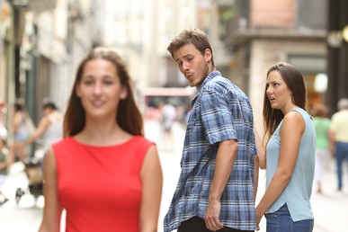

Le mème le plus connu
Le meme le plus connu est "Distracted Boyfriend", qui est une image devenue virale en 2017. L'image montre un homme marchant avec sa petite amie, mais il se tourne pour regarder une autre femme qui passe. L'expression faciale de la petite amie montre de la désapprobation, et l'expression de l'homme révèle son intérêt pour la femme qu'il regarde. Explication du meme : Le meme "Distracted Boyfriend" est souvent utilisé pour illustrer un conflit entre deux choix ou une personne qui abandonne quelque chose de valable pour quelque chose de moins important ou plus superficiel. Les éléments de l'image sont souvent étiquetés comme suit : Le petit ami : Représente une personne ou une entité attirée par une nouvelle idée ou un nouveau choix. La petite amie : Représente souvent une idée ou une responsabilité déjà existante, qui est délaissée. La femme dans la rue : Représente la nouvelle tentation ou l'option séduisante qui attire l'attention. Ce meme a été utilisé dans une multitude de contextes différents pour représenter des choix absurdes ou des priorités mal placées, allant de la culture populaire à des thèmes plus sérieux comme les décisions de carrière, les préférences personnelles, ou même des situations politiques. Sa popularité tient à sa simplicité et à la flexibilité de son utilisation dans de nombreux contextes.
